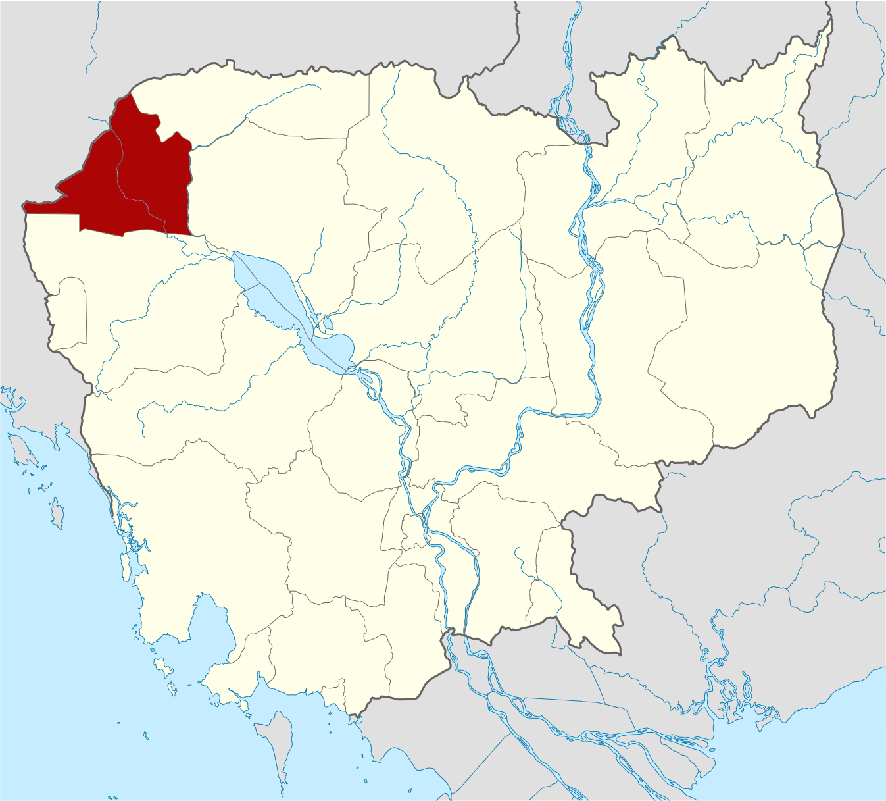
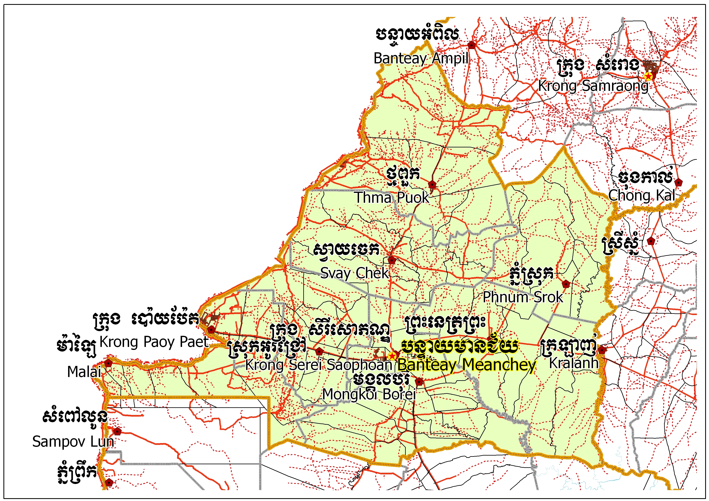
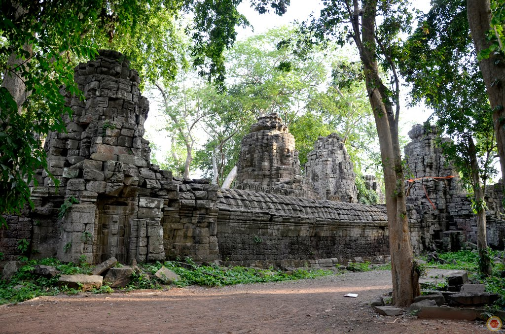
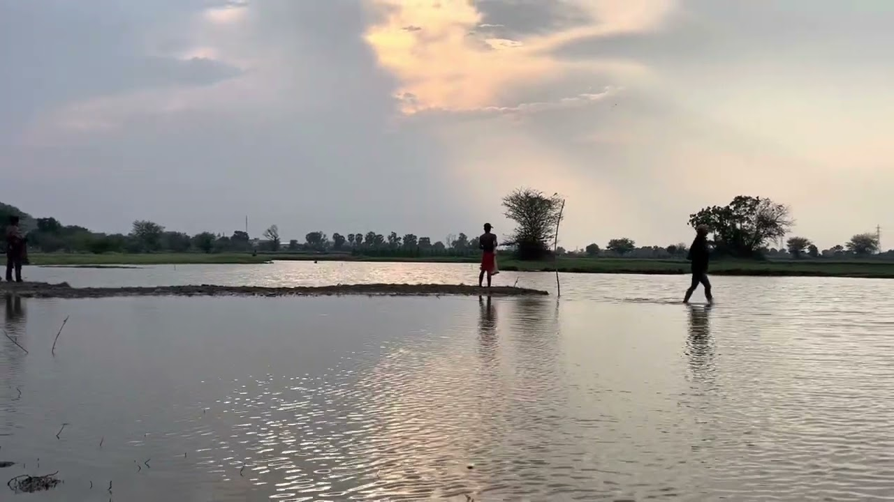
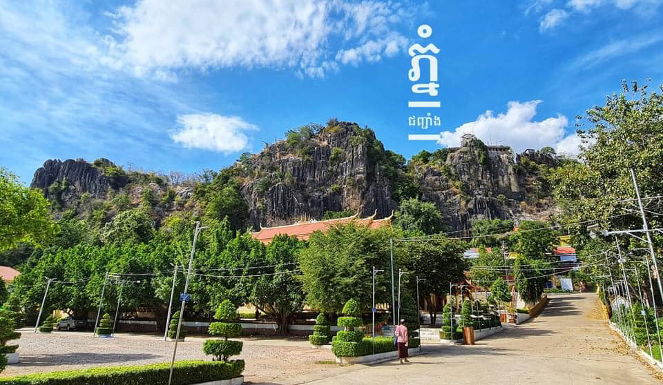

BanteayMeanchey
← ត្រឡប់ទៅផែនទីខេត្តបន្ទាយមានជ័យ គឺជាខេត្តមួយនៃព្រះរាជាណាចក្រកម្ពុជាដែលស្ថិតនៅចុងពាយ័ព្យ នៃប្រទេសដែលមានសេដ្ឋកិច្ចយ៉ាងសំខាន់មួយរបស់ប្រទេសជាតិ។ខេត្តនេះមានព្រំប្រទល់ ខេត្តជាប់ខេត្តឧត្តរមានជ័យនៅខាងកើតជាប់ខេត្តសៀមរាបនៅខាងត្បូងជាប់ខេត្តបាត់ដំបង និងមានព្រំដែនរួមអន្តរជាតិជាមួយប្រទេសសៀមនៅខាងលិច។ទីរួមខេត្តនិងទី ក្រុងធំបង្អស់គឺក្រុងសិរីសោភ័ណនិងក្រុងប៉ោយប៉ែត។ខេត្តបន្ទាយមានជ័យគឺជាខេត្តធំបង្អស់ទី ១៣ នៃព្រះរាជាណាចក្រកម្ពុជា។ខេត្តនេះមានក្រុងចំនួន ០២ គឺក្រុងសិរីសោភ័ណ និងក្រុងប៉ោយប៉ែតនៅប៉ែកខាងលិចនៃខេត្តគឺជាព្រំដែនអន្តរជាតិឆ្លងចូលទៅខេត្តស្រះកែវ ប្រទេសសៀមប្រវែង ១៥៣ គម។ខេត្តបន្ទាយមានជ័យគឺជាខេត្តមួយក្នុងចំណោម ខេត្តទាំង ០៩ ដែលជាផ្នែកនៃទុនបម្រុងជីវមណ្ឌលទន្លេសាប។


ឋិតនៅចម្ងាយ ៣៥៩ គីឡូម៉ែត្រពីរាជធានីភ្នំពេញតាមផ្លូវជាតិលេខ ០៥ និងមានទីតាំងជាប់នឹងព្រំប្រទល់ខេត្តបាត់ដំបង ខេត្តឧត្ដរមានជ័យ ខេត្តសៀមរាប និង ខេត្តស្រះកែវ ប្រទេសសៀម។ខេត្តបន្ទាយមានជ័យកំពុងទទួលបានភ្ញៀវទេសចរណ៍យ៉ាងច្រើនកុះករតាមរយៈកាស៊ីណូខ្នាតអន្តរជាតិមួយ ដែលកំពុងបើកឲ្យមានការចូលលេងកម្សាន្តទាំងយប់ទាំងថ្ងៃ។តំបន់កាស៊ីណូនេះក៏មានរៀបចំជាផ្នែកផ្សេងទៀតដូចជា ភោជនីយដ្ឋាន សណ្ឋាគារ ផ្សារលក់ឥវ៉ាន់ផងដែរ។ភ្ញៀវដែល ទៅកម្សាន្តនៅទីនោះភាគច្រើនមកពីប្រទេសសៀមនិងប្រទេសចិនឯភ្ញៀវជនជាតិផ្សេងៗទៀតពុំសូវមាននោះទេ។បើចំពោះជនជាតិខ្មែរជាអ្នកទេសចរណ៍សាមញ្ញវិញពួកគេច្រើនទៅ ដើម្បីកម្សាន្តភ្នែកតែប៉ុណ្ណោះពុំសូវមានអ្នកដែលទៅដើម្បីប្រព្រឹត្តល្បែងស៊ីសងនោះឡើយ។មិនមែនមានតែតំបន់កម្សាន្តច្រកព្រំដែនលក្ខណៈអន្តរជាតិប៉ោយប៉ែតប៉ុណ្ណោះទេដែលភ្ញៀវទេសចរណ៍ ចាប់អារម្មណ៍នោះខេត្តបន្ទាយមានជ័យនៅមានតំបន់កម្សាន្តមួយចំនួនទៀតដែលបានទាក់ទាញនិងកំពុងអភិវឌ្ឍដើម្បីទាក់ទាញភ្ញៀវទេសចរណ៍ទៀតផង។
ខេត្តបន្ទាយមានជ័យមាន ០២ ក្រុង និង ០៧ ស្រុក÷
ប្រាសាទបន្ទាយឆ្មារមានទីតាំងស្ថិតនៅតាមបណ្តោយផ្លូវជាតិលេខ ៥៦A ចម្ងាយប្រមាណ៥៩ គីឡូម៉ែត្រ ពីទីរួមខេត្តបន្ទាយមានជ័យក្នុងស្រុកថ្មពួកតំបន់រមណីយដ្ឋានប្រវត្តិសាស្ត្រប្រាសាទបន្ទាយឆ្មារបានកសាងឡើងដោយព្រះបាទជ័យវរ្ម័នទី៧ក្នុងចន្លោះសតវត្សទី ១២ និង ១៣។ តំបន់នេះត្រូវបានរងនូវការបំផ្លិចបំផ្លាញដោយសារសង្គ្រាមដែលបណ្ដាលឲ្យប្រាសាទមួយចំនួនធំត្រូវបាក់បែកខ្ទេចខ្ទីនៅសល់តែថ្មរាយប៉ាយពាសពេញដីមិនត្រឹមតែប៉ុណ្ណោះ នៅមានពួកចោរបានលួចយករូបចម្លាក់ផ្សេងៗពីប្រាសាទទៅលក់ឲ្យពួកឈ្មួញជនជាតិសៀមទៀតផង។ភាពល្បីល្បាញនៃប្រាសាទនេះបានធ្វើឲ្យពីរមួយថ្ងៃទៅមួយថ្ងៃមាន អ្នកទេសចរណ៍បរទេសចូលទស្សនាកាន់តែច្រើនឡើងៗដែលសក្ដានុពលនេះបានធ្វើឲ្យអជ្ញាធរគ្រប់គ្រងប្រាសាទមានការចាប់អារម្មណ៍ហើយបានព្យាយាមរៀបចំបណ្ដា ប្រាសាទដទៃទៀតនៅក្នុងខេត្តឲ្យកាន់តែគួរឲ្យទាក់ទាញ ជាមួយនឹងការជួសជុលហេដ្ឋារចនាសម្ព័ន្ធផ្លូវថ្នល់ដើម្បីជាភាពងាយស្រួលដល់ទេសចរណ៍ក្នុងការទៅកម្សាន្ត។ ប្រាសាទដែលខេត្តនេះមានគម្រោងរៀបចំជួសជុលលម្អឡើងវិញមានដូចជាប្រាសាទបន្ទាយទ័ព ប្រាសាទព្រះឈរ ប្រាសាទប្រាំ ជាដើម។


អាងទឹកកងវ៉ា គឺជាអាងស្តុកទឹកដ៏សំខាន់មួយស្ថិតនៅក្នុងប្រទេសកម្ពុជា ដែលមានតួនាទីចម្បងក្នុងការផ្គត់ផ្គង់ទឹកសម្រាប់ប្រជាជន និងវិស័យកសិកម្ម។ អាងទឹកនេះស្ថិតនៅតំបន់ជាយក្រុង ដែលអាចជួយរក្សាទុកទឹកនៅរដូវវស្សា ដើម្បីប្រើប្រាស់នៅរដូវប្រាំង។ តាមប្រវត្តិ វាត្រូវបានសាងសង់ឡើងក្នុងគោលបំណងគ្រប់គ្រងធនធានទឹក និងបង្ការការខ្វះទឹកក្នុងតំបន់។ ទំហំរបស់អាងទឹកមានលក្ខណៈធំទូលាយគ្រប់គ្រាន់សម្រាប់ស្តុកទឹកបានបរិមាណច្រើន និងជួយគាំទ្រដល់ការដាំដុះកសិកម្ម។ សារៈសំខាន់របស់វាគឺមិនត្រឹមតែផ្គត់ផ្គង់ទឹកប៉ុណ្ណោះទេ ប៉ុន្តែថែមទាំងជួយការពារទឹកជំនន់ រក្សាតុល្យភាពបរិស្ថាន និងលើកស្ទួយជីវភាពរស់នៅរបស់ប្រជាជននៅតំបន់ជុំវិញផងដែរ។
ភ្នំបាក់ និងភ្នំជញ្ជាំងស្ថិតនៅក្នុងប្រភេទរមណីយដ្ឋាន ព្រៃភ្នំ និងតំបន់វប្បធម៌ឬប្រពៃណី។ សម្រាប់ចំណុច សំខាន់ៗ ក៏ដូចជាភាពទាក់ទាញនៃរមណីយដ្ឋានភ្នំបាក់ និងភ្នំជញ្ជាំងដែលអាចធ្វើអោយភ្ញៀវទេសចរមានចំណាំអារម្មណ៏នោះ មានដូចជា៖ ទស្សនាទេសភាពព្រៃភ្នំ, ទស្សនាវត្ត និងចំណុចផ្សេងៗទៀត។ភ្នំបាក់ និង ភ្នំជញ្ជាំង ជារមណីដ្ឋានធម្មជាតិ និង វប្បធម៌មួយ ដ៏ស្រស់ត្រកាល និងជាកន្លែងកំសាន្តមួយ ដែលមានភ្នំពីរ នៅជិតគ្នា ដែលមើលទៅមានរូបរាង និងមានឈ្មោះដូចជាកូនភ្លោះ មានថ្មធំៗ ជាច្រើនបញ្ឈរ ដូចជាជញ្ជាំង ពោរពេញដោយ បរិយាកាស និង ទិដ្ឋភាពដ៏ល្អប្រណិត។ ចំណែកនៅចន្លោះភ្នំ មានកន្លែងដ៏ស្រស់ស្អាតមួយ សំរាប់ភ្ញៀវទេសចរណ៍ជាតិ និង អន្តរជាតិសំរាកកំសាន្ត។ជាពិសេស នៅជើងភ្នំ មានត្រពាំងធំមួយ មានទំហំ ១០ម៉ែត្រការ៉េ ជម្រៅ ១២ម៉ែត្រ និង រូបចម្លាក់ថ្មបុរាណជាច្រើនបានធ្លាក់សន្សល់ទុកនៅក្នុងត្រពាំងនោះ តាំងពីសម័យមុន មកម្ល៉េះ។សម្រាប់ការធ្វើដំណើរដើម្បីទៅដល់ទីតាំងនៃរមណីយដ្ឋានភ្នំបាក់ និងភ្នំជញ្ជាំង ភ្ញៀវទេសចរមាន ភាពងាយស្រួល ពីព្រោះមិនមានការធ្វើដំណើរថ្មើរជើង និងធ្វើដំណើរឆ្លងទឹក រឺក៏ជិះទូកឡើយ។ ចំពោះចំណតរថយន្តវិញ ភ្ញៀវទេសចរអាចធ្វើការចតដោយផ្ទាល់នៅរមណីយដ្ឋានបានថែមទៀតផង។ សម្រាប់កន្លែងអង្គុយលំហែរកាយវិញ រមណីយដ្ឋានភ្នំបាក់ និងភ្នំជញ្ជាំង គឺពុំទាន់មានខ្យូសអង្គុយ រឺក៏តូបអង្គុយសម្រាប់ទទួលភ្ញៀវទេសចរនោះទេ។ ក្រៅពីនេះ រមណីយដ្ឋានភ្នំបាក់ និងភ្នំជញ្ជាំងពុំទាន់ មានកន្លែងកម្មង់អាហារ រឺកន្លែងលក់អាហារ, អាហារដ្ឋាន និងភោជនីយដ្ឋាននៅឡើយទេ។សម្រាប់ កន្លែងស្នាក់នៅ រមណីយដ្ឋានភ្នំបាក់ និងភ្នំជញ្ជាំងពុំទាន់មានបឹងហ្គាឡូ, ផ្ទះសំណាក់ និងសណ្ឋាគារ នៅឡើយទេ។

ខេត្តបន្ទាយមានជ័យមានប្រជាជនសរុប៨១៦ ៣៨២ ឬ ៥.២៤២% នៃប្រជាជនកម្ពុជាសរុប(ទិន្នន័យរដ្ឋាភិបាលកម្ពុជាឆ្នាំ២០០៧)។ ក្នុងនោះមានបុរស ៤០២ ២០១ (ត្រូវជា៤៩.១១%) និង ស្ត្រី ៤១៤ ១៨១ (ត្រូវជា៥០.៨៩%)។ អត្រាកំណើនប្រជាជនស្មើនឹង ៥.៩៣%។ប្រជាជនខេត្តបន្ទាយមានជ័យ ៩៣% ជាកសិករ ៥% ជាពាណិជ្ជករ ១.១៧% ជាអ្នកនេសាទ និង ០.៨៣% ទៀតជាមន្ត្រីរាជការ។
សេដ្ឋកិច្ចខេត្ត ៩៣% ពឹងផ្អែកលើកសិកម្មនិងនៅសល់៧% ទៀតគឺការនេសាទនិងពាណិជ្ជកម្ម។ដោយសារតែខេត្ត នេះមានព្រំដែនជាប់នឹងប្រទេសសៀមអាជីកម្មបនល្បែង(កាស៊ីណូ) កំពុងតែរីកដុះដាលយ៉ាងខ្លាំងដែលកំពុងក្លាយជាប្រភពចំណូលដ៏សំខាន់សម្រាប់ខេត្ត។
សីតុណ្ហភាពមធ្យមរបស់ខេត្តបន្ទាយមានជ័យគឺនៅចន្លោះពី ៣០ ទៅ ៣៣ អង្សា។ អាកាសធាតុមានលក្ខណៈក្ដៅនិងសើមដូចនៅទូទាំងប្រទេសកម្ពុជាដែរ។ រដូវវស្សាចាប់ពីខែមិថុនាដល់ខែតុលា រដូវរងាចាប់ពីខែវិច្ឆិកាដល់ខែកុម្ភៈ និង រដូវក្ដៅចាប់ពីខែមីនាដល់ខែឧសភា។